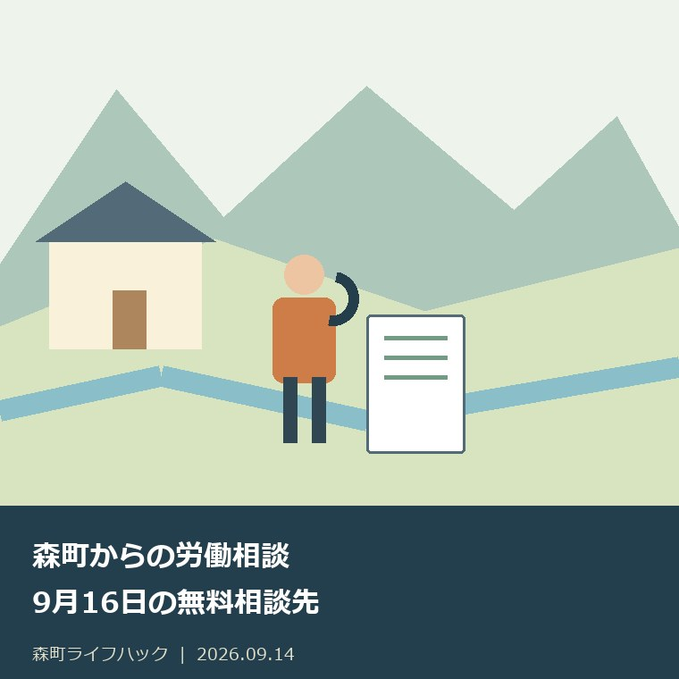
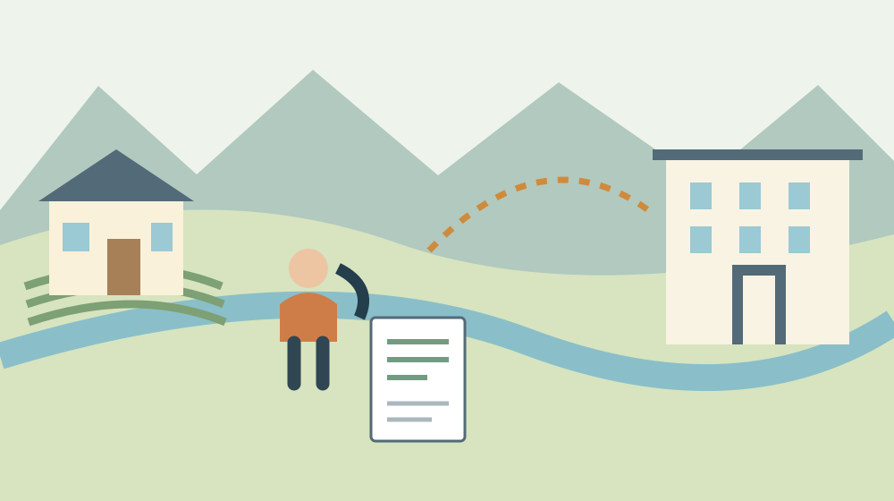

森町からの労働相談｜9月16日の無料相談先
／ 手続き・制度

Q. 森町から、9月16日に無料で労働問題を弁護士へ相談できますか？
静岡県は2026年9月16日、西部県民生活センターで13時30分～15時30分に無料の弁護士労働相談会を予定しています。会場は浜松市中央区中央1-12-1の浜松総合庁舎3階。電話事前申込みが必要です。予約の空きは未確認のため、森町を出る前に053-452-0144へ予約可否を聞いてください。
働く人も、店を回す人も、相談のために時間を空ける
森町で働きながら賃金や職場の行き違いを抱えると、相談先を探す時間そのものが負担になります。仕事を抜ける調整、家族の送迎、留守番のお願いまで必要になる方もいるはずです。小規模な事業所なら、経営者が外出する間の電話や接客を誰が受けるかも考えなければなりません。
私、大石浩之（磐田市／不動産業）は、相談料だけを見て「気軽に行けばよい」とは書きたくありません。働く人も事業者も、普段の暮らしと仕事を回したうえで窓口へ向かいます。この記事では、2026年9月16日の無料相談先を確かめ、森町を出る前に済ませられる確認を整理します。
読む時点の空席まで、公開された開催予定からは分かりません。2026年9月14日に公式情報を確認しましたが、予約の電話を代行した記事ではありません。「開催する日」と「自分が相談できる時刻」は別に確定させる必要があります。今日は電話で予約可否を聞くところまでを、小さな一歩にします。
9月16日の弁護士労働相談会は、浜松の西部会場
静岡県「労働問題の相談について」は、2026年6月2日更新の案内です。弁護士労働相談会の西部日程に2026年9月16日が載っています。開催予定時間は13時30分～15時30分。無料ですが、各県民生活センターへの電話事前申込みが必要です。
| 確認する項目 | 県の掲載内容 |
|---|---|
| 日程 | 2026年9月16日（水曜日） |
| 会場 | 西部県民生活センター |
| 所在地 | 浜松市中央区中央1-12-1 浜松総合庁舎3階 |
| 時間 | 13時30分～15時30分 |
| 料金と申込み | 無料・電話事前申込み |
| 電話 | 053-452-0144 |
会場は森町役場ではありません。森町から探している相談先でも、実際に向かう場所は浜松市中央区です。地図へ入れる住所と電話帳へ保存する名称をそろえておくと、森町の別の相談会と取り違えずに予定を共有できます。予約時には「西部の9月16日の弁護士労働相談会」と伝えます。
13時30分～15時30分は会全体の時間帯です。一人が2時間相談できるという意味ではありません。個別の持ち時間、受付を済ませる時刻、定員や残席は今回の掲載欄では確認できませんでした。長い説明を予定する前に、予約電話で何分程度の相談になるかを聞いてください。
県の通常窓口の受付は平日9時～16時で、12時～13時を除きます。土日、祝日、12月29日～1月3日は対応していません。9月14日に電話するなら、その受付時間内に連絡します。昼休みにしか動けない場合でも、12時台なら必ずつながるとは考えず、連絡できる時間を組み直します。

通常の労働相談と、弁護士相談会を分けて選ぶ
静岡県の通常の労働相談は、労働者と使用者の双方を対象にしています。労働相談という名前から働く人専用と受け取るかもしれませんが、事業者側にも入口があります。面接、電話、電子メールによる相談が案内されており、弁護士相談会の日だけに相談機会が限られているわけではありません。
県が挙げる相談内容には賃金不払い、労働時間、退職金、配置転換、職場の人間関係などがあります。相談者が最初から法律上の分類を決めている必要はありません。どの制度名に当てはまるかを自力で言い切るより、何が起き、何を確かめたいかを伝える方が、入口を探しやすいと私は考えます。
私は、電話の冒頭で「労働者側です」「事業者側です」と立場を伝える方法を勧めます。そのうえで、9月16日の弁護士相談を希望する理由を短く添えます。通常相談の対象が労使双方である事実と、今回の相談会で自分の案件を受けてもらえるかは、予約時に分けて確認します。
県の案内では、県には事業所の指導監督権限がなく、立入り調査の依頼には対応できないとされています。相談すれば県が直ちに勤務先へ調査に行く、という仕組みではありません。調査を希望するときは勤務先を所管する労働基準監督署への問合せが案内されています。
私は、希望する結果を「法律上どう考えるか知りたい」「相手との話合いの進め方を知りたい」「調査を求めたい」に分けるとよいと思います。窓口の役割が違えば、次に動く相手も変わります。相談の段階で結論を決めつけず、どの機関につなぐべき内容かを確かめる使い方です。
良い点：移動を伴わない入口と、専門相談の両方がある
県の労働相談には、森町から電話で話せる通常窓口と、日程を決めて弁護士へ相談する機会があります。県は秘密を厳守すると案内しています。困りごとを身近な仕事関係者へ広く話す前に、公的窓口で相談先を整理できる点は、利用を考える材料になります。
私は、町の人の移動負担を考えると、電話という入口を先に使えることを評価します。家を出られない理由が送迎でも、仕事でも、介護でも、まず確認できる内容があるからです。電話を使っただけで問題が解決するとは言えませんが、行き先を間違えた往復を一つ減らす可能性があります。
県の通常の電話相談では、固定電話向けに0120-9-39610のフリーアクセスも案内されています。ただし携帯電話、IP電話などからは利用できません。スマートフォンでこの記事を読んでいる方は、西部の直通番号053-452-0144を使ってください。相談会の申込みも、まずこの直通番号へ確認します。
森町「暮らしの相談窓口」は、町内の無料法律相談にも予約が必要だと案内しています。町の法律相談と県の弁護士労働相談会は、主催、会場、日程、予約先が異なります。相談窓口の選び方全体は、相談を予約の要否で分ける記事でも整理しています。
私は、無料の相談先が複数あること自体より、今回の困りごとに合う入口を選べることに意味があると考えます。移動が少ない場所、早く聞ける窓口、必要な専門分野は同じとは限りません。9月16日に行けないという理由だけで、相談すること全体を諦めなくてよいのです。
注文したい点：空席、持ち時間、持参物は電話で補う
9月16日の弁護士労働相談会について、県の掲載欄だけでは予約の空きや持参物の指定までは分かりません。私は、開催情報と一緒に「電話で何を聞くか」が見えると、働く人にも小規模事業者にも使いやすくなると思います。担当職員の対応を評価した話ではなく、公開案内を読む側からの意見です。
私は、無料という表示が移動費や休業の負担まで含めて消してしまわないようにしたいと考えます。交通費、駐車、送迎を頼む時間は、相談料とは別の問題です。今日の一歩として、予約可否を聞く電話で来場時刻と所要時間の目安を確かめれば、休む時間を見積もる材料ができます。
相談会に出れば賃金が支払われる、会社との合意が成立する、といった結果は確約されていません。具体的な見通しは相談内容や資料によって異なります。私は、当日の目標を「何を追加で確かめ、次に誰へ相談するかが分かること」に置く方が、限られた面談時間を使いやすいと考えます。
県のメール相談は、面接・電話が難しい方の入口として案内されています。個別事情を十分に把握できない場合には一般的な対応方法の回答になることも記載されています。私は、返信を待てる内容か、期限が近い書面があるかを分け、急ぐ事情は電話で伝えることを勧めます。
県は相談のやりとりの録音・録画や、SNS等で公にする行為を控えるよう案内しています。ここで言うのは相談窓口とのやりとりです。職場での記録をどう扱えるかという個別の法律問題まで、この注意書きだけで判断しません。相談後は自分の理解を短いメモにし、不明点をその場で聞き直します。
対案・結論：今日は予約可否を電話で聞く
9月14日に行うことは、053-452-0144へ「9月16日の弁護士労働相談会は、まだ予約できますか」と聞くことです。受付時間を確かめ、返答を書ける紙を横に置きます。最初の電話で資料を全部読み上げようとせず、予約の可否と相談内容の概要から伝えてください。
電話で使う文は、例えば「森町から相談を考えています。賃金のことで、働く側として相談したいです。9月16日の西部会場は予約できますか」です。これは私が提案する言い方で、窓口の指定様式ではありません。事業者の方なら、自分の立場に置き換えて伝えます。
予約を取れる場合は、指定された来場時刻、面談の長さ、必要資料、同伴の可否を続けて確認します。電話で話しづらい事情がある場合は、どのように伝えればよいかも聞きます。家族が代わりに予約する場合の条件も、本人の申込みと同じだと決めつけないでください。
予約が取れない場合は「通常の電話相談で先に整理できますか」と尋ねます。ほかの日程を案内されたら、その日まで待ってよい内容かを、相談したい期限と一緒に伝えます。空席がないことと、相談先が存在しないことは別です。代替の入口を書き留めてから電話を終えます。
持参資料は「起きたこと」と「確認したいこと」を分ける
労働相談へ何を持参するかは、予約先の指定を優先します。ここでは準備の提案として、日付順の記録と手元の資料を分ける方法を紹介します。私が勧めたいのは、すべての出来事を長文にすることより、相談員が最初の質問をしやすい一枚を作ることです。
賃金なら、どの期間の、どの支払について疑問があるかを書きます。給与明細や勤務時間の記録が手元にある場合は、対象月をそろえます。支払われていないと考える金額を計算したなら、その根拠も別に残します。計算に自信がなければ、確定額のように書かず「確認したい金額」とします。
職場で言われた内容は、日付、誰から、どの方法で伝えられたかを整理します。メールや書面に残る文と、自分の記憶を区別しておくと、後から訂正しやすくなります。記憶が曖昧な日を無理に埋める必要はありません。「日付未確認」として、原文を探す対象にできます。
事業者側なら、契約時に示した条件、実際の運用、相手から受けた申出を分ける方法が考えられます。自分の説明を通すための文章と、経過を確認する資料を混ぜないためです。必要な社内資料の範囲は窓口へ尋ね、他の従業員の情報まで無差別に持ち出すことは避けます。
原本を持参するのか、写しで足りるのか、スマートフォンの画面で確認できるのかも予約時の質問にできます。窓口の指定を聞く前に、印刷や証明書の取得に費用を掛ける必要があるとは限りません。資料が不足している場合は、何がないかを伝え、相談自体を先延ばしにする前に対応を聞きます。
森町で家族に残す記録は、相談内容を広げすぎない
森町から浜松へ相談に出る予定を共有するなら、家族には行き先、来場時刻、帰宅予定、連絡方法を伝えます。仕事の細かな経緯まで、送迎を頼む相手全員へ共有する必要はありません。本人が話してよい範囲を決め、移動の段取りと相談内容の記録を分けておく方法があります。
私は、相談後のメモを「説明を受けたこと」「まだ確かめていないこと」「次の連絡先」に分けると、家族との行き違いを減らせると考えます。相談した本人の受け止めと、確定した手続きが混ざると、同居家族まで先回りして動く可能性があります。期限のある宿題には、確認した日も添えます。
賃金の問題と当面の生活費の心配が重なっているなら、相談先を一本に絞る必要はありません。暮らしを維持するための窓口の探し方は、森町の生活困窮の相談窓口の記事を参照できます。労働問題の相談が終わるまで、別の困りごとの確認を止めなくてもよいのです。
森町の消費生活相談員の案内は、商品やサービスの契約トラブルなどを対象にしています。職場の賃金について聞く窓口と、私生活で買った商品の契約について聞く窓口は区別します。入口の違いは、森町の消費生活相談窓口の記事でも確認できます。
私は、家賃や住宅の維持費を考える仕事の立場から、働き方の問題が家計へ届く前に相談の入口を見つけてほしいと思います。ただし、家を売るかどうかと労働相談の利用を結び付ける必要はありません。今日の予約確認は、住まいの大きな決断とは独立して進められます。
大石の視点：無料でも、移動と休業は無料にならない
無料の相談でも、森町から移動する時間と仕事を空ける負担は残ります。私は、制度があるという説明だけでは足りないと考えます。使う人が実際に動ける段取りまで見なければ、相談先の紹介は暮らしに届きません。働く人の休日も、小さな店を支える人の時間も、無料の資源ではありません。
私にも迷いがあります。資料の整理を丁寧に勧めるほど、「全部そろわないと電話できない」と受け止められないかという迷いです。だからこの記事の最初の行動は、資料完成ではなく予約可否の確認にしました。必要な資料は相手に聞けます。足りないものを知るためにも、まず入口へつながれます。
森町の仕事を支えている人に、さらに調べ物と移動を一人で背負わせたくありません。私は、電話番号と聞く一文を並べる程度の小さな工夫にも意味があると思います。2026年9月14日は、053-452-0144へ9月16日の予約可否を聞く。予定が確定したら、その時刻に合わせて移動を組む順番です。
よくある質問
相談や申請の前に確かめたい点を、次の3問で確認できます。
9月16日の相談会は予約なしで行っても相談できますか？
静岡県の案内では、弁護士労働相談会は電話での事前申込みが必要です。2026年9月16日の西部会場は13時30分～15時30分ですが、一人の持ち時間を示したものではありません。予約の空き、指定される来場時刻、持参資料を053-452-0144へ確認し、予約が確定してから森町からの移動を組んでください。
小さな事業所の経営者でも労働相談を利用できますか？
静岡県の通常の労働相談窓口は、働く人と使用者の双方を対象としています。賃金や労働時間、職場の人間関係など幅広い相談を案内しています。9月16日の弁護士相談会を希望する場合は、自分が事業者側であることと相談内容を電話で伝え、対象となるか、予約を取れるかを確認してください。相談しただけで解決が確約されるものではありません。
浜松まで出向けない場合、森町から電話で相談できますか？
県の通常の労働相談には電話相談があります。西部県民生活センターは053-452-0144、受付は平日9時～16時のうち12時～13時を除く時間です。祝日・年末年始は対応していません。携帯電話やIP電話は県のフリーアクセスを利用できないため直通番号へ。弁護士相談会自体を電話で受けられるかは別途確認が必要です。

参考にした公式情報
- 静岡県『労働問題の相談について』2026年6月2日更新（2026年9月14日確認）
- 森町『暮らしの相談窓口』（2026年9月14日確認）
- 森町『森町消費生活相談員について』（2026年9月14日確認）
最終確認日：2026-09-14。制度・開催状況は変更される場合があります。最新情報は公式窓口へ、個別の法律・登記・医療上の判断は各専門家へ確認してください。